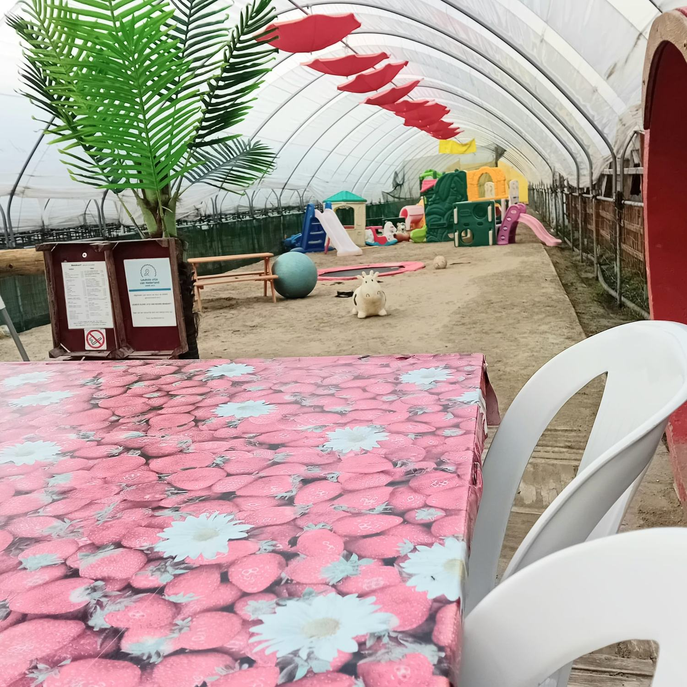

Over ons
Familie Bastiaansen verwelkomt u graag
Het Aardbeienterras is een familiebedrijf in Rijsbergen en bestaat dit jaar 30 jaar, van 1997 tot 2027. De aardbeien worden elke dag voor dag en dauw geplukt op de eigen kwekerij.
Wij werken met duurzame groene energie, opgewekt door Nederlandse agrarische bedrijven. De aardbeien worden milieubewust geteeld en het bedrijf is GLOBALG.A.P. gecertificeerd voor hygiëne en veiligheid.

Goed om te weten
Gratis entree
Het terras kost niets om te bezoeken. Eigen consumpties zijn niet toegestaan.
Menukaart
Een heerlijk eenvoudige menukaart, ook met een gluten en lactosevrije wafel.
Honden
Welkom op het buitenterras, niet in het binnenterras, de speelweide en de kassen.